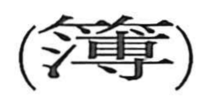

簿

Kun: | On: bo
register ・ ledger ・ account book ・ record book
Explanation
簿 is a phono-semantic character built from the bamboo radical, indicating a writing material, and 溥 as the phonetic. 溥 not only guides the on reading but also means “thin,” pointing to the thin, flat bamboo slips on which characters were written. These 竹簡 were tied together to form notebooks and accounting registers, and from such bound bundles arose the sense of an account book or ledger, seen in compounds like 簿書 and 帳簿.